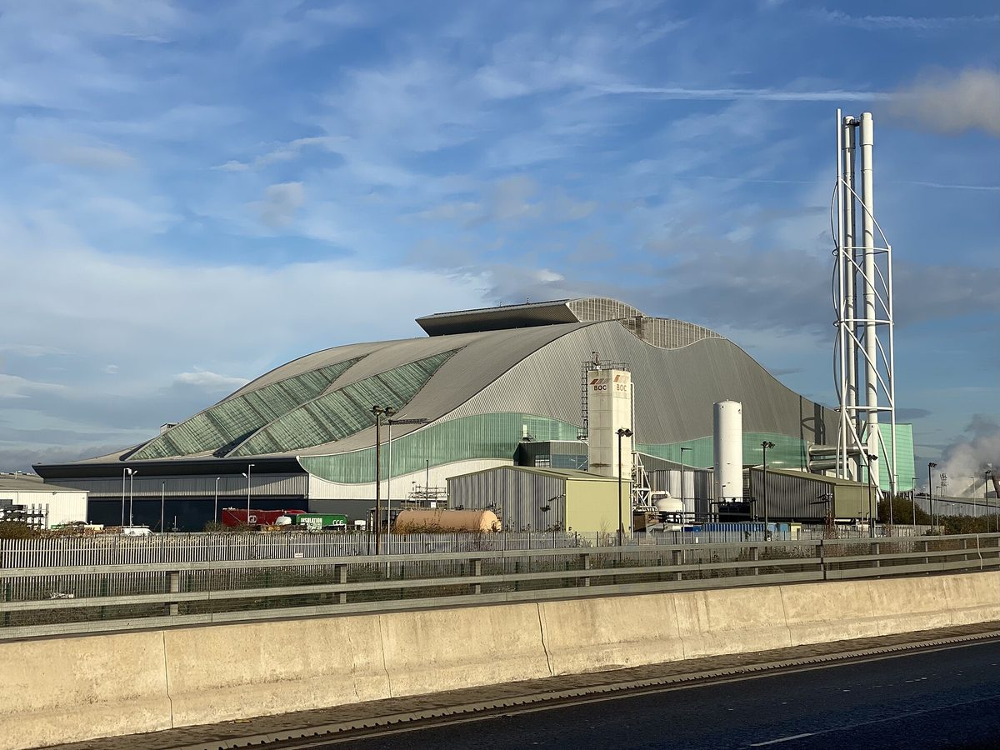

영국 카디프 시 소유 열망 회사, 쓰레기 소각 남는 열로 웨일스 의회·밀레니엄센터 난방…시영 임대주택·주민센터도 먼저 연결

1,550만 파운드 망, 영국 정부 보조금·웨일스 정부 대출로 깔아…시의회 "세 건물 난방 배출 최대 80% 줄일 수 있다", 시내·카디프 베이 2단계 재원 검토
영국 웨일스 카디프의 시 소유 열망이 웨일스 의회 건물 세네드와 의원 사무동 티 하웰, 공연장 웨일스 밀레니엄센터에 연결돼 세 건물이 가스 보일러 없이 난방과 온수를 쓰게 됐다. 열원은 민간 폐기물 회사 비리도(Viridor)의 트라이던트 파크 에너지 회수 시설로, 쓰레기를 태워 전기를 만들고 남는 열이 단열관을 따라 카디프 베이 일대 건물로 간다. 1,550만 파운드가 든 이 망은 영국 정부 보조금과 웨일스 정부 대출로 지어졌고, 시의회가 소유한 별도 회사인 카디프 열망 회사(Cardiff Heat Network Ltd)가 사업을 맡았다. 이번 세 건물에 앞서 카디프·베일 칼리지, 트레실리언 하우스, 넬슨 하우스, 뷰트타운 커뮤니티센터와 시의회 소유 사회주택 단지 스콧 하버가 먼저 망에 들어왔다. 시의회는 세 건물의 난방 배출을 최대 80%까지 줄일 수 있다고 밝혔고, 세네드 시설관리 책임자 매슈 존스는 운영비와 탄소 배출을 함께 낮출 것으로 기대한다고 말했다. 회사는 기존 관 주변 수요처와 추가 연결을 협의하면서 시내 중심과 카디프 베이로 망을 넓히는 2단계 재원을 찾고 있으며, 소각 시설 말고도 지하수나 카디프 지하 심부 지열을 받을 수 있게 망을 설계했다.
시민에너지 관점
의회와 공연장, 대학, 주민센터, 시영 임대주택처럼 열 수요가 꾸준한 공공 건물을 먼저 묶었기에 1,550만 파운드짜리 망이 보조금과 대출만으로 첫 삽을 뜰 수 있었다. 소각장 열에 기대면 민간 열원 회사에 끌려다니게 된다는 우려가 있지만, 관은 시 소유 회사가 갖고 지하수·지열까지 받을 수 있게 설계했으니 열원은 바뀌어도 망과 그 수익은 지역에 남는다. 열망의 주인이 지역이어야 연결 순서와 요금을 지역이 정할 수 있고, 시영 임대주택 세입자가 의회 건물과 같은 난방을 받는 일도 가능해진다. 우리 지자체도 버려지는 소각·산업 열과 공공 건물·공공임대주택을 짝지어 공공과 주민이 소유하는 지역 열망부터 계획해야 한다.
출처: Nation.Cymru 2026-10-29 Mark Mansfield 원문 보기
英カーディフ市所有の熱ネットワーク会社、ごみ焼却の余熱でウェールズ議会・ミレニアムセンターを暖房…市営賃貸住宅・コミュニティセンターも先に接続
1,550万ポンドの熱導管網、英政府の補助金とウェールズ政府の融資で整備…市議会「3棟の暖房排出を最大80%削減できる」、市中心部・カーディフ湾への第2段階の財源を検討
英ウェールズのカーディフで、市が所有する熱ネットワークがウェールズ議会の議事堂セネッドと議員事務棟ティー・ハウエル、劇場ウェールズ・ミレニアムセンターにつながり、3棟はガスボイラーなしで暖房と給湯を使えるようになった。熱源は民間廃棄物会社ヴィリドー（Viridor）のトライデント・パーク・エネルギー回収施設で、ごみを燃やして発電した後に残る熱が断熱管を通ってカーディフ湾一帯の建物に送られる。1,550万ポンドをかけたこの熱導管網は英政府の補助金とウェールズ政府の融資で整備され、市議会が所有する別会社カーディフ熱ネットワーク社（Cardiff Heat Network Ltd）が事業を担った。今回の3棟に先立ち、カーディフ・ベール・カレッジ、トレシリアン・ハウス、ネルソン・ハウス、ビュートタウン・コミュニティセンター、市議会所有の社会住宅団地スコット・ハーバーがすでに接続している。市議会は3棟の暖房に伴う排出を最大80%削減できるとし、セネッドの施設管理責任者マシュー・ジョーンズ氏は運営費と炭素排出の両方が下がると期待していると述べた。同社は既存の管の周辺で追加接続を協議する一方、市中心部とカーディフ湾へ網を広げる第2段階の財源を探っており、焼却施設以外にも地下水やカーディフ地下の深部地熱を受け入れられるよう設計している。
市民エネルギーの視点
議会や劇場、大学、コミュニティセンター、市営賃貸住宅のように熱需要が安定した公共建物をまず束ねたからこそ、1,550万ポンドの熱導管網が補助金と融資だけで着工できた。焼却施設の熱に頼れば民間の熱源会社に振り回されるとの懸念もあるが、管は市所有の会社が持ち、地下水や地熱も受け入れられるよう設計されているため、熱源が変わっても網とその収益は地域に残る。熱ネットワークの持ち主が地域であってこそ、接続の順番や料金を地域が決められ、市営住宅の入居者が議会の建物と同じ暖房を受けることも可能になる。韓国の自治体も、捨てられている焼却・産業の熱と公共建物・公共賃貸住宅を組み合わせ、公共と住民が所有する地域熱ネットワークから計画すべきだ。
出典: Nation.Cymru 2026-10-29 Mark Mansfield 原文を読む
英国加的夫市属热网公司用垃圾焚烧余热为威尔士议会和千禧中心供暖…市营出租住房和社区中心率先接入
1,550万英镑热网由英国政府补贴和威尔士政府贷款建成…市议会称"三栋建筑供暖排放最多可减80%"，正研究向市中心和加的夫湾延伸的第二期资金
英国威尔士加的夫的市属热网已接入威尔士议会大楼塞内德（Senedd）、议员办公楼蒂豪厄尔（Tŷ Hywel）和演出场馆威尔士千禧中心，三栋建筑从此不用燃气锅炉也能取暖和用热水。热源是民营废弃物公司Viridor的三叉戟公园能源回收设施，垃圾焚烧发电后剩余的热量经保温管道输送到加的夫湾一带的建筑。这张耗资1,550万英镑的热网由英国政府补贴和威尔士政府贷款建成，由市议会所有的独立公司加的夫热网公司（Cardiff Heat Network Ltd）负责实施。在这三栋建筑之前，加的夫与河谷学院、特雷西利安大楼、纳尔逊大楼、比特敦社区中心以及市议会所有的社会住房小区斯科特港已经先行接入。市议会表示，三栋建筑的供暖排放最多可减少80%；塞内德设施管理负责人马修·琼斯说，预计运营成本和碳排放都会下降。公司正与现有管道附近的潜在用户商谈新增接入，同时为把热网延伸到市中心和加的夫湾的第二期寻找资金，热网在设计上除焚烧设施外，还可接纳地下水或加的夫地下的深层地热。
市民能源视角
正因为先把议会、剧院、学院、社区中心、市营出租住房等热需求稳定的公共建筑捆在一起，这张1,550万英镑的热网才能只靠补贴和贷款开工。有人担心依赖焚烧余热会受制于民营热源公司，但管道归市属公司所有，并设计为可接纳地下水和地热，因此热源可以更换，热网及其收益则留在地方。只有地方当热网的主人，才能由地方决定接入顺序和价格，也才可能让市营住房的租户享受和议会大楼一样的供暖。韩国的地方政府也应把被浪费的焚烧热、工业余热与公共建筑、公共租赁住房配对，从公共和居民共同拥有的区域热网开始规划。
来源: Nation.Cymru 2026-10-29 Mark Mansfield 查看原文
Cardiff council-owned heat network company warms Welsh parliament and Wales Millennium Centre with surplus heat from waste incineration; council housing and a community centre connected first
£15.5 million network built with a UK Government grant and a Welsh Government loan; council says heating emissions of the three buildings could fall by up to 80%, funding for a second phase into the city centre and Cardiff Bay under review
A council-owned heat network in Cardiff, Wales, has connected the Senedd, the Welsh parliament building, together with the members' office block Tŷ Hywel and the Wales Millennium Centre arts venue, so the three buildings can now get heating and hot water without gas boilers. The heat comes from the Trident Park energy recovery facility run by private waste company Viridor: heat left over after burning waste to generate electricity travels through insulated pipes to buildings around Cardiff Bay. The £15.5 million network was built with a UK Government grant and a Welsh Government loan, and is run by Cardiff Heat Network Ltd, a separate company owned by the city council. Before these three, Cardiff and Vale College, Tresillian House, Nelson House, Butetown Community Centre and the council-owned social housing development at Scott Harbour had already joined. The council said the heating emissions of the three buildings could be cut by up to 80%, and Matthew Jones, who heads facilities management at the Senedd, said he expected lower operating costs as well as lower carbon. The company is talking to potential customers near the existing pipes and looking for funding for a second phase into the city centre and Cardiff Bay, and the network has been designed to take other sources besides the incinerator, such as groundwater or deep geothermal heat beneath Cardiff.
Citizen Energy View
Because public buildings with steady heat demand were bundled together first, from parliament and an arts centre to a college, a community centre and council housing, a £15.5 million network could break ground on grants and loans alone. Some worry that relying on incinerator heat leaves a city at the mercy of a private heat supplier, but the pipes belong to a council-owned company and are designed to take groundwater and geothermal heat, so the source can change while the network and its income stay local. Only when the community owns the heat network can it decide the order of connections and the price, and make it possible for council tenants to get the same heating as the parliament building. Korean local governments, too, should start planning publicly and community-owned district heat networks by pairing wasted incineration and industrial heat with public buildings and public rental housing.
Source: Nation.Cymru 2026-10-29 Mark Mansfield Read the original